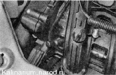
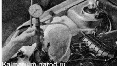

Проверка технического состояния системы питанияДля выполнения работы потребуется спепиальный топливный манометр. Последовательность выполнения 1. Подготавливаем автомобиль к выполнению работы 2. Отворачиваем защитный колпачок диагностического штуцера топливной рампы. 3. Подсоединяем наконечник шланга манометра к диагностическому штуцеру топливной рампы. Рожковым ключом заворачиваем наконечник шланга. Совет При необходимости давление в топливной рампе можно измерить самодельным прибором, изготовив его из манометра от ножного насоса. Перед подсоединением такого манометра необходимо сбросить давление топлива. После этого выверните золотник из штуцера топливной рампы. Это можно сделать металлическим колпачком колесного вентиля. Для соединения манометра со штуцером топливной рампы следует использовать отрезок бензостойкого шланга подходящего диаметра. Концы шлангов должны быть надежно закреплены хомутами. 4. Включаем зажигание. При этом несколько секунд будет работать топливный насос. Дождавшись, когда насос перестанет работать, выключаем зажигание. 5. Для удаления воздуха из манометра, опустив конец сливной трубки в небольшую емкость, отворачиваем прокачной штуцер манометра на 1/3—1/2 оборота и сбрасываем избыточное давление бензина из топливной рампы. При этом будет удален воздух из шланга манометра. 
6. Заворачиваем прокачной штупер до упора. Запускаем двигатель и измеряем рабочее давление в топливной рампе при разной частоте вращения коленчатого вала. У исправного двигателя оно должно быть в пределах 378-390 кПа (3,8-3,9 бар). 7. Выключаем зажигание. 8. Опустив конец трубки в емкость, открываем штупер и сбрасываем давление из топливопровода. 9. Отсоединяем манометр от диагностического штуцера топливной рампы. 10. Наворачиваем защитный колпачок на штуцер топливной рампы. Если рабочее давление в топливной рампе нестабильно или больше нормы, то неисправен регулятор давления топлива. Низкое давление (меньше нормы) также может быть вызвано неисправностью регулятора. Возможно, засорился сетчатый фильтр топливного насоса, или топливный насос не развивает необходимого давления. Для очистки сетчатого фильтра вам необходимо снять топливный модуль. Убедиться в неисправности регулятора давления и топливного насоса можно, заменив их заведомо исправными. Также можно заменить топливный модуль в сборе. |